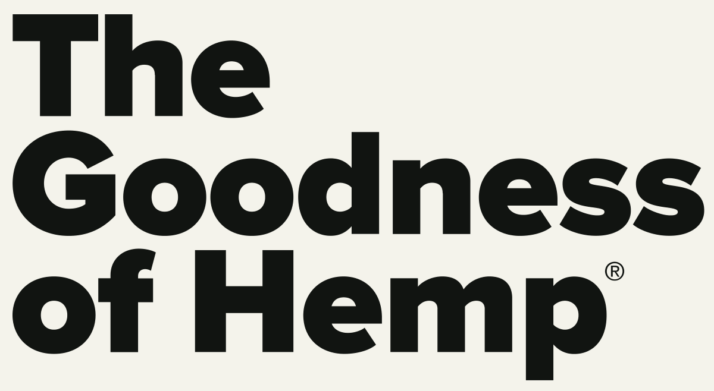
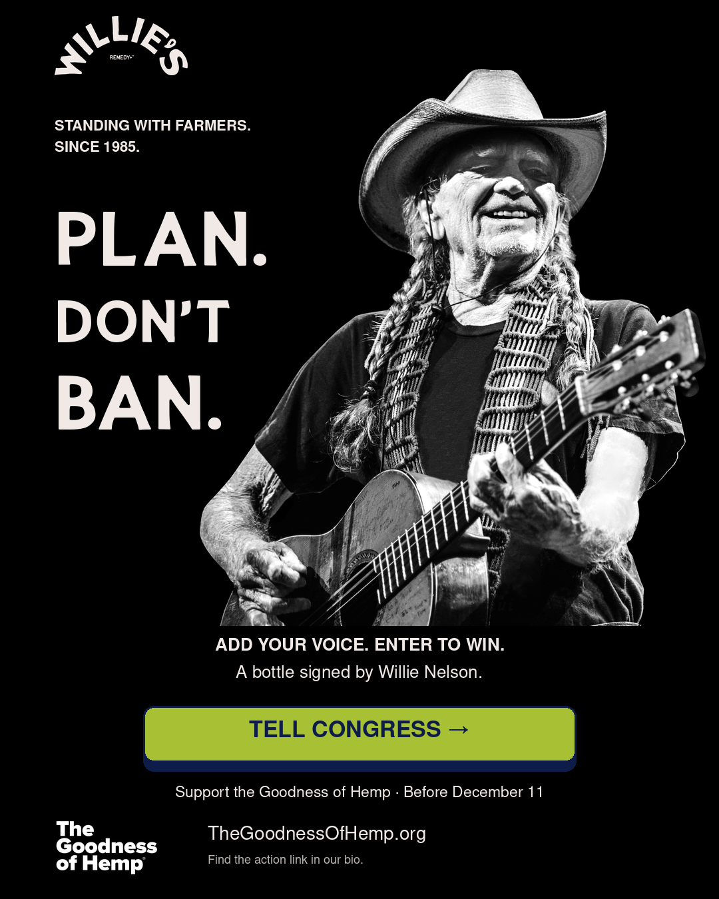

Stand with farmers.
Open with Willie’s farmer legacy, then connect it to the people growing and making hemp today.

DRAFT · TEAM REVIEWWILLIE’S REMEDY × THE GOODNESS OF HEMP
NOVEMBER 10 — DECEMBER 10, 2026
Keep the good growing.
A working campaign with Willie’s Remedy, built around Willie’s commitment to farmers. Explore the story, review the creative, and help shape the rollout.
Explore the campaign ↘Prepared for discussion. Nothing is scheduled or sent.

THE CAMPAIGN AT A GLANCE
Open with Willie’s farmer legacy, then connect it to the people growing and making hemp today.
Invite people to review and send a Tell Congress message. Keep one clear action at the center of each placement.
Four weekly emails, two final reminders, and social creative that carries the story between sends.
THE PROPOSED ROLLOUT
All dates are 2026. Send times are to be confirmed.
Nov 12: full carousel · Nov 19: farmer story · Nov 26: community thanks · Dec 3: carousel reshare · Dec 9: story reminder. Adapt supplied feed artwork for stories before posting.
DESIGNS + EDITABLE COPY
Select a send to review the design and full copy.
THE CAMPAIGN REFERENCE DESK
| ID | Asset | Category | Format | Date |
|---|
WHAT SUCCESS LOOKS LIKE
Measure completed Tell Congress actions first, with unique clicks and completion rates by source where tracking supports it. Thank people who have acted and invite them to share.
Open the project on GitHub ↗
FOUR TREATMENTS + ONE CAROUSEL
Made to carry the story.
Original 1080 × 1350 feed artwork. Open an image for the full-size file.
Share treatments
The four-slide carousel
Use in order, 01–04. Each slide opens the original image.
Read supplied social captions